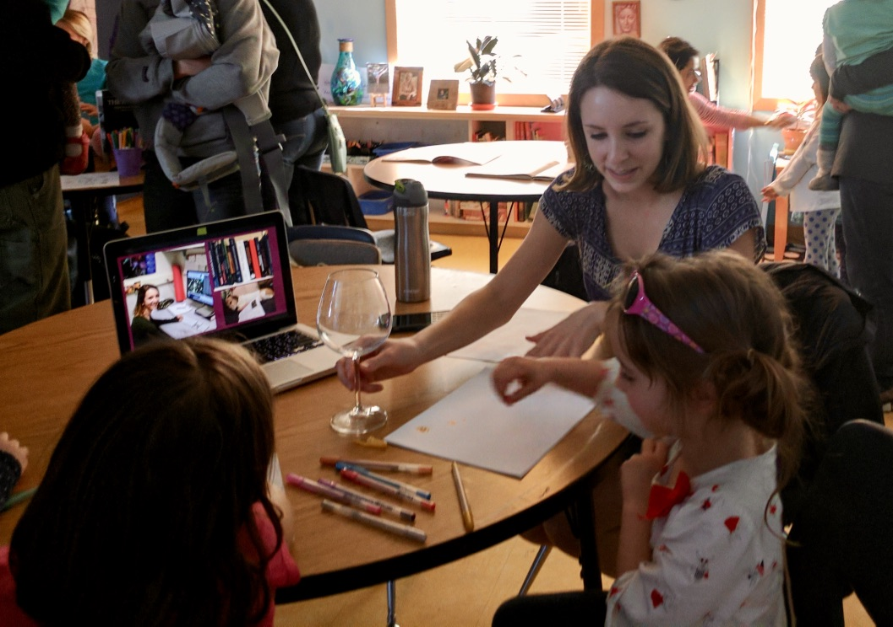
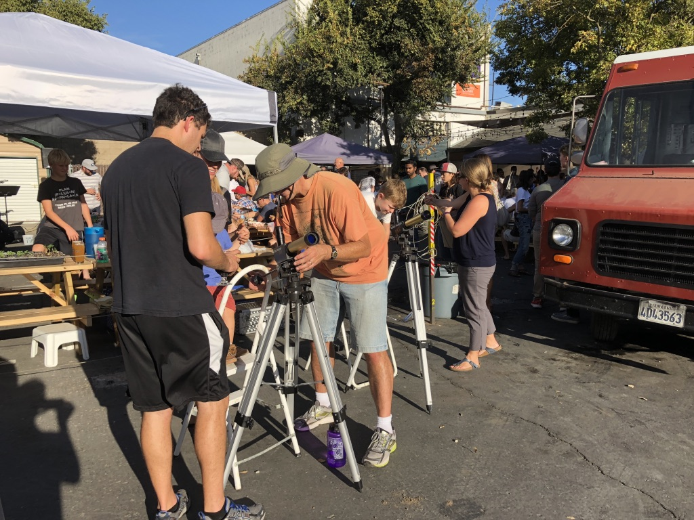
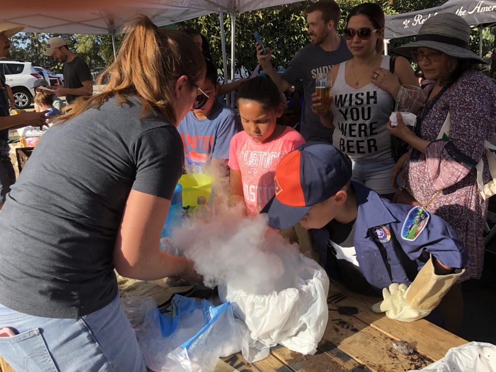
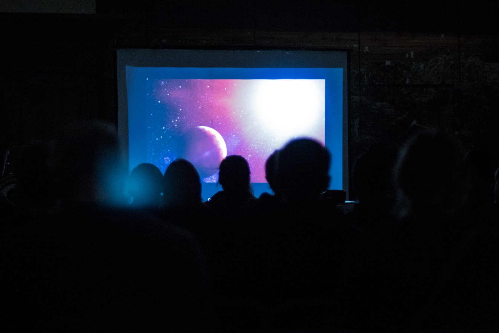
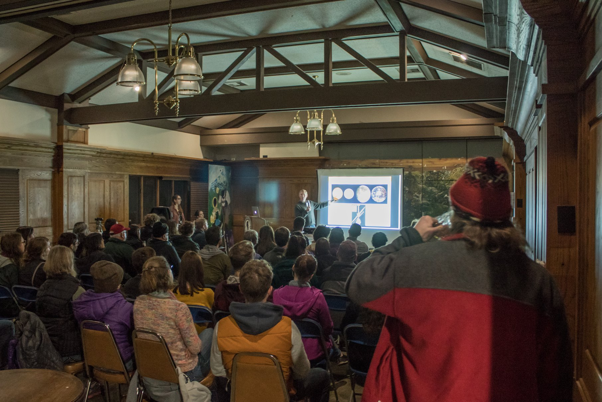

Side Hustles
Inclusion, Diversity, and Outreach
Inclusion
First generation students
As a first generation college and graduate student, I understand the importance of having help with the various
application processes that higher education requires. I volunteer to read college and grad school applications and
discuss my experiences with high school and college students. If you need help with an application, please feel free
to contact me.
Cultivating a welcoming culture in physics and astronomy through workshops and resource-sharing
As a member of the Diversity in Physics (DIP)
group, I strive to make everyone around me feel welcome and included. As a group, we have been active in improving
the department culture at UC Davis, through helping design and implement workshops focused on applying to graduate school,
imposter syndrome, and mentoring. Additionally, we compile and share resources for various circumstances that come up in grad school,
such as finding an advisor, mentoring and being a mentor, dealing with harassment, and much more.
Diversity
Antiracism in Physics and Astronomy Departments
In addition to inclusivity, I care deeply about diversity in Physics and Astronomy. Among the resources
DIP has compiled are those focused on confronting whiteness in academia, becoming a better antriracist, and
actionable items to change racist policy and ideas. I started a reading group in the department focused on antriracist reading material,
and have been advocating strongly for antiracist policy and practices in hiring and testing in Physics and Astronomy. Find
resources on the DIP website or contact me.
Outreach
Elementary and Middle School EventsI participate in elementary school aged-centric outreach events in Davis and do various other kid-friendly outreach such as "Zoom a Scientist" and classroom visits. At past events, I've set up solar telescopes, done demonstrations of gravitational lensing, made comets out of household materials, and of course, made liquid nitrogen ice cream.
  
Astronomy on Tap
I started a branch of Astronomy on Tap in Davis with UCD
Professor Stefano Valenti. AoT is a monthly series of
public talks at a brewery. More information about events is on our Facebook
and Twitter pages.

